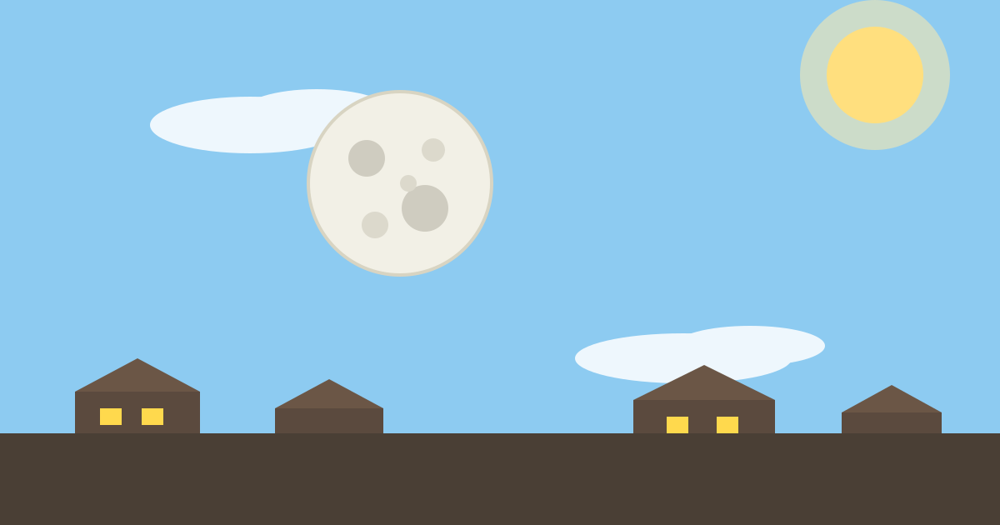

Why Is the Moon Sometimes Visible During the Day?

Most of us grow up with a simple picture in our heads: the sun belongs to the day and the moon belongs to the night. So the first time you notice the moon hanging in a bright blue afternoon sky, it feels wrong — like something has slipped out of place. It has not. The daytime moon is completely normal, and once you know why it happens, you will start spotting it all the time.
The short answer is that the moon is up during the day far more often than people realise — it is simply harder to notice against a bright blue sky.
The Moon Is in the Day Sky More Often Than You Think
The moon circles the Earth once every 27 days or so, and it spends about half of that time above the horizon and half below it — just like the sun. That means, on average, the moon is in the sky for roughly 12 hours out of every 24. About half of those hours fall in daylight. In other words, on most days of the month there is a stretch of daytime when the moon is up there, whether you notice it or not.
So why does it feel rare? Because we rarely look up. During the day our eyes are busy with the ground, with work, with the road ahead. At night, the moon is the brightest thing in a dark sky, so it demands attention. In the daytime it is a faint pale disc in a huge bright sky, and unless you happen to glance in the right direction, it slips past unnoticed.
There is one more reason it feels unusual. The moon moves across the sky slowly, about the width of your outstretched hand every hour, and it changes position from day to day. You cannot rely on it being in the same place at the same time, the way you can with the sun at noon, so each sighting feels like a surprise.
Sunlight Is the Key to Seeing It
The moon makes no light of its own. It shines only because sunlight falls on it and bounces back toward Earth — the same way a white wall looks bright in a lit room. That reflected sunlight is what you see, day or night. The difference is the background. At night the sky is dark, so even a faint reflected glow stands out clearly. During the day the sky itself is bright blue, lit by sunlight scattered through the air, and the moon has to compete with all of that brightness.
That competition is why the daytime moon usually looks pale and washed out, almost like a ghost of its nighttime self. The moon's surface is actually dark grey rock, about as reflective as worn asphalt. It only looks brilliant white at night because your eyes are adapted to darkness and there is nothing brighter nearby to compare it with.
Clear, dry air helps a lot. On a crisp morning after rain, or on a dry winter day, the sky is a deeper blue and the air holds less haze, so the moon's pale shape stands out more sharply. On a hot, hazy afternoon the sky turns milky, the contrast drops, and the moon disappears into the glare.
The Moon's Phases Decide When You Can See It
The moon's monthly cycle — its phases — decides when it is in the daytime sky and how easy it is to spot. At new moon, the moon sits between the Earth and the sun, and its lit side faces away from us, so we see nothing at all. A few days later it appears as a thin crescent in the evening sky, and as it grows toward full moon it rises later each day and stays up longer.
At full moon, the moon is on the opposite side of the Earth from the sun. It rises at sunset and sets at sunrise, which means it spends almost the whole night in the sky and very little of the day. That is why a full moon is rarely a daytime sight — by the time most people are up and about, it has already set.
The best daytime moons come a few days before and after the full moon, and around the quarter phases. A day or two before full moon, the moon is already up in the late afternoon, a pale disc climbing before sunset. A day or two after full moon, it is still up in the early morning, fading into the blue as the sun rises. Around first quarter it is high in the afternoon sky, and around last quarter it is high in the morning sky. If you want to catch the daytime moon on purpose, these are the days to try.
Why It Looks Pale, and Why It Seems to Follow You
Two things about the daytime moon puzzle people, and both have simple explanations. The first is the colour. The moon looks white at night and pale grey in the day for the same reason: contrast. At night your eyes are dark-adapted, and the moon is the brightest object in view, so your brain reads it as white. In daylight your eyes are adapted to a bright world, so you see it closer to its real colour — a dull grey, like concrete.
The second is the feeling that the moon follows you when you move. It does not, of course. The moon is about 384,000 kilometres away, so far that walking a few streets changes your viewing angle by almost nothing. Nearby things — trees, houses, lamp posts — slide past as you move, but the moon stays in the same direction, and your brain reads that as following. It is a trick of perspective, not a property of the moon.
Common Mistakes
The first mistake is thinking the daytime moon is a rare or strange event, a sign of something unusual. It is not. It happens on most days of the month, and astronomers expect it. The only thing unusual is noticing it, which most of us simply do not do.
The second mistake is thinking the moon only comes out at night because it belongs to the night. The moon has no fixed shift. It follows its orbit, rising and setting about 50 minutes later each day, and that steady drift carries it through mornings, afternoons and evenings alike.
The third mistake is confusing the moon with a planet or a star. In daylight, the only planet bright enough to spot with the naked eye is Venus, and it appears as a tiny, sharp point of light, usually near the sun at dawn or dusk — never a broad pale disc. If you see a round, softly glowing shape in the daytime sky, it is almost certainly the moon.
Frequently Asked Questions
Can I see the moon during the day every day?
Not every day, but most days there is a window when it is up. Around new moon it is invisible for a few days, and around full moon it is mostly a night object. In the days between, especially around the quarter phases and the days just before and after full moon, it is in the daytime sky for hours. A clear morning or late afternoon is your best chance.
Why can I see the moon in daylight but not the stars?
The moon is far closer and far brighter than any star, and its light is reflected sunlight — the same strong light that lights the daytime sky. Stars are distant suns whose faint light is drowned out by the bright blue sky. The moon is bright enough to survive that competition; the stars are not.
Does the moon make its own light?
No. The moon is a cold, rocky world with no light of its own. Everything you see is sunlight bouncing off its surface toward your eyes. That is also why the moon has phases: as it circles the Earth, we see different amounts of its sunlit side, from a thin crescent to a full disc.
Conclusion
The daytime moon is not a mystery and not a rarity. It is the same moon you see at night, following the same orbit, lit by the same sun — only now it has to share a bright sky, so it looks pale and is easy to miss. Its phases decide when it is up in the day, clear air decides how easy it is to spot, and the habit of looking up decides whether you notice it at all. Next time you are outside in the late afternoon or early morning, glance up — there is a good chance the moon has been there all along.